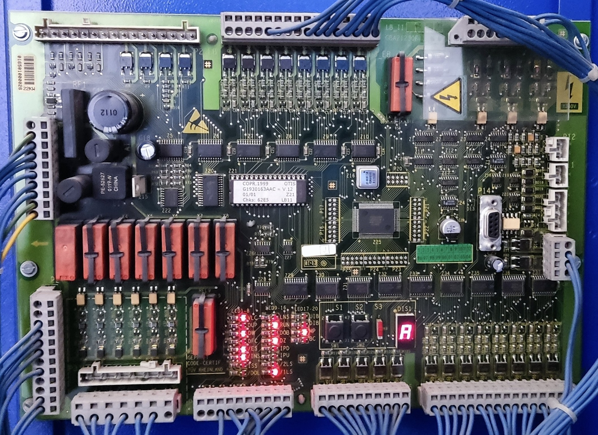

• Monitorização Lógica: Certifique a integridade mecânica de todos os limites de caixa antes de testar os encostos de portas.
• Caso o bloco térmico atue, a cadeia principal de teste é interrompida logo na origem (Bornes 95-96).
• ATENÇÃO: Remova por completo qualquer ponte temporária de diagnóstico antes de dar o trabalho de reparação por concluído.
| Componente Técnico / Circuito | Pontas do Multímetro |
|---|---|
|
Alimentação Bloco Térmico (BT) |
95 ➔ 96
|
|
Gerais Cabine Stop Inspeção, Paraquedas e Alongamento |
H7 ➔ I5/B1
|
|
Gerais Caixa Limitador de Velocidade |
I5/B1 ➔ C3/B2
|
|
Gerais Caixa Fins de Curso (Sup/Inf), Roda Tensora e Poço |
C3/B2 ➔ B5
|
|
Portas / Trincos Encosto de Portas de Piso (Pré-fecho) |
B5 ➔ B6
|
|
Portas / Trincos Encravamento das Portas de Piso (Trincos) Ponto de validação final da série externa |
B6 ➔ B7
|